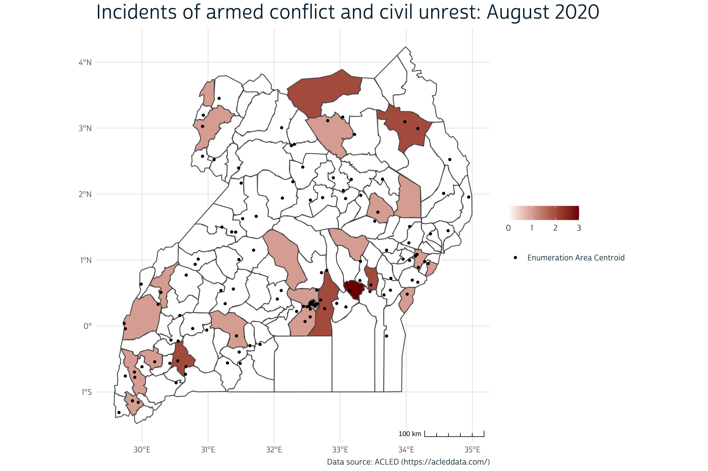
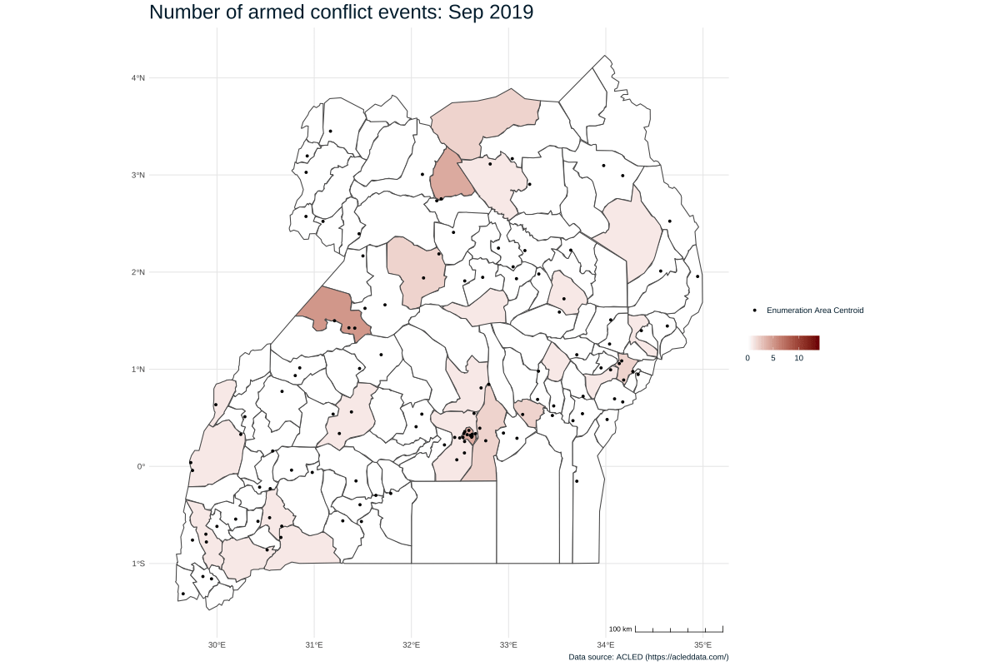

Conflict data provides important context for access to family planning services.
When we introduced the new PMA Client Exit Interview (CEI) surveys in our last post, we mentioned several variables that describe some of the barriers that women face when accessing care at a particular facility. Some of these deal with transportation, in particular:
Transportation challenges can make it difficult or impossible for women to access family planning services, and they can be rooted in multiple intersecting factors that may not be visible without additional context. In some places, for example, the presence of nearby or recent armed conflict can disrupt public transportation, cause destruction to transportation infrastructure (e.g., roads, bridges), make certain types of travel unsafe, or even discourage movement altogether. In this post, we will show you how to download, aggregate, and match externally sourced conflict data with a 2020 CEI survey from Uganda. We’ll see how the proximity and timing of armed conflict influences CEI transportation measures, and we’ll demonstrate how to map monthly conflict statistics with an animated plot built with the gganimate package.
Let’s begin by downloading a CEI data extract from the IPUMS PMA website. We’ll select the Uganda 2020 sample and the five variables listed above; a number of pre-selected variables will also be included automatically.
We’ve downloaded our data extract and saved it in the “data” subfolder of our working directory. We’ll load it here, along with a few key packages:
library(ipumsr)
library(tidyverse)
cei <- read_ipums_micro(
ddi = "data/pma_00058.xml",
data = "data/pma_00058.dat.gz"
)
The variables FACNEAREST, NOTNEARESTWHY, and TRANSPORT are labelled integers, but we’ll change them into factors in order to make our summary tables easier to read. In the process, we’ll also replace the top-code “NIU (not in universe)” with the label NA and drop any zero-frequency response options.
Next, we’ll want to combine FACTRAVELHR and FACTRAVELMIN together. These variables come from a combined question intended to solicit both hours and minutes:
109. How much time did it take you to travel here today?
Enter -88 for do not know in both, -99 for no response in both.
Minutes ___
Please verify the time entered
Hours ___
Please verify the time enteredNotably, however, some respondents appear to have provided the same time in both hours and minutes (e.g. 3 hours and 180 minutes). While you might decide to use these responses in your own analysis, we’ll exercise an abundance of caution here: we’ll drop any responses where FACTRAVELHR > 0, but the number of minutes in FACTRAVELMIN is longer than one hour. We’ll also drop cases where the number of hours in FACTRAVELHR exceeds one full day (24 hours). With the remaining cases, we’ll calculate FACTRAVEL as the sum of FACTRAVELMIN and 60 * FACTRAVELHR.
Now that we’ve finished processing the CEI data extract, let’s take a look at a gtsummary table containing our key transportation variables.
library(gtsummary)
cei %>%
select(FACNEAREST, NOTNEARESTWHY, TRANSPORT, FACTRAVEL) %>%
tbl_summary(
label = list(
FACNEAREST ~ "Facility is nearest to residence",
NOTNEARESTWHY ~ "Reason for not visiting nearest facility",
TRANSPORT ~ "Mode of transportation taken to facility",
FACTRAVEL ~ "Total travel time to facility (minutes)"),
statistic = list(
all_continuous() ~ "{median} ({p25}, {p75})",
all_categorical() ~ "{n} ({p}%)"
),
digits = list(everything() ~ 0),
missing = "no"
) %>%
modify_spanning_header(
everything() ~ "# Client Exit Interview Transportation Summary"
) %>%
modify_header(update = list(label ~ " ")) %>%
bold_labels() %>%
italicize_labels()
Client Exit Interview Transportation Summary |
|
|---|---|
| N = 2,3491 | |
| Facility is nearest to residence | 1,878 (80%) |
| Reason for not visiting nearest facility | |
| No family planning services | 64 (14%) |
| Inconvenient operating hours | 20 (4%) |
| Bad reputation / Bad prior experience | 35 (7%) |
| Do not like personnel | 17 (4%) |
| No medicine | 35 (7%) |
| Prefers to remain anonymous | 16 (3%) |
| It is more expensive than other options | 129 (27%) |
| Was referred | 23 (5%) |
| Less convenient location | 13 (3%) |
| Absence of provider | 20 (4%) |
| Other | 99 (21%) |
| Mode of transportation taken to facility | |
| Motor vehicle (car, motorcycle, bus) | 868 (37%) |
| Bicycle / pedicab | 96 (4%) |
| Walking | 1,382 (59%) |
| Boat | 1 (0%) |
| Other | 2 (0%) |
| Total travel time to facility (minutes) | 30 (20, 60) |
|
1
n (%); Median (IQR)
|
|
While 80% of sampled women visited the facility nearest to their home, 20% went elsewhere. For the latter group, a plurality of women visited a different facility because of cost (27%), while the second most important reason is “other” (21%). A majority of women (59%) traveled to the facility on foot (“Walking”), and the median travel time for all women is half an hour (the IQR shows that 50% of women spent between 20 and 60 minutes traveling).
Before we dig into these variables a bit more, consider how each of these might be impacted by armed conflict. It may prevent women from visiting the nearest healthcare facility, particularly if there is localized violent conflict occurring between their home and the facility, and thus also increase travel times to facilities to avoid conflict-ridden areas. It may also increase wait times at the facilities and limit the stocks of available medicines, contraceptives, and other medical supplies at facilities if supply-chains are interrupted by violence. To test these effects, we’ll need to choose and download a dataset describing the location and timing of armed conflict events in Uganda.
There are several sources of publicly available conflict data. Two notable and frequently used databases are The Armed Conflict Location & Event Data Project (ACLED) and Uppsala Conflict Data Program (UCDP). Some researchers also argue for the integration of such databases into a more comprehensive dataset. If you are interested in learning more about this technique, please refer to the R package, meltt. However, for the sake of this blog post, we will use the ACLED dataset.
In order to get access to the ACLED data and be able to download an extract of the data, you must first register for an account on the ACLED website.
Figure 1: Image from https://acleddata.com/#/dashboard
After verifying your email by clicking the link in the email sent to you from ACLED, you must agree to ACLED’s Terms of Use in the dashboard of your account. Next, you must request an “access key” (a string of upper and lower case letters and numbers) by clicking the “Add new key” button in the dashboard of your account.
Figure 2: Image from https://developer.acleddata.com/dashboard/main/
Be sure to copy and save this access key as you will need it later and will not be able to view it again (though you can revoke the key and request another one if you do misplace it).
After these steps, you can use the access key to request data through the ACLED’s Data Export Tool. To request the dataset, enter the access key, dates of interest, and country or region of interest. We’ll examine one year (September 1, 2019 to August 31, 2020) of conflict data prior to the beginning of CEI data collection in Uganda in September 2020.
Figure 3: Image from https://acleddata.com/data-export-tool/
The ACLED dataset you’ll receive is a simple CSV file with 31 columns: we’ll select a handful that we’ll need in our analysis.
conflict <- read_csv("data/2019-09-01-2020-08-31-Uganda.csv") %>%
select(
event_id_cnty, event_type, sub_event_type, event_date,
time_precision, latitude, longitude, admin2, geo_precision
)
conflict
# A tibble: 515 × 9
event_id_cnty event_type sub_event_type event_date time_precision
<chr> <chr> <chr> <chr> <dbl>
1 UGA6189 Protests Protest with i… 31 August… 1
2 UGA6188 Riots Mob violence 30 August… 1
3 UGA6187 Strategic … Looting/proper… 30 August… 1
4 UGA6186 Riots Mob violence 29 August… 1
5 UGA6185 Riots Mob violence 29 August… 1
6 UGA6183 Battles Armed clash 27 August… 1
7 UGA6181 Riots Mob violence 26 August… 1
8 UGA6182 Riots Violent demons… 26 August… 1
9 UGA6180 Violence a… Attack 25 August… 1
10 UGA6179 Protests Excessive forc… 23 August… 1
# … with 505 more rows, and 4 more variables: latitude <dbl>,
# longitude <dbl>, admin2 <chr>, geo_precision <dbl>You’ll notice that there are 515 rows in our conflict dataset - each representing a specific event with a unique event_id_cnty number. The variables event_type and sub_event_type describe different types of recorded events. We’ll use the kableExtra package to create an easy-to-read table showing the frequency of each event type.
library(kableExtra)
conflict %>%
count(event_type, sub_event_type) %>%
mutate(pct = 100*prop.table(n) %>% round(3)) %>%
kbl()
| event_type | sub_event_type | n | pct |
|---|---|---|---|
| Battles | Armed clash | 67 | 13.0 |
| Explosions/Remote violence | Remote explosive/landmine/IED | 1 | 0.2 |
| Protests | Excessive force against protesters | 5 | 1.0 |
| Protests | Peaceful protest | 65 | 12.6 |
| Protests | Protest with intervention | 53 | 10.3 |
| Riots | Mob violence | 112 | 21.7 |
| Riots | Violent demonstration | 57 | 11.1 |
| Strategic developments | Arrests | 2 | 0.4 |
| Strategic developments | Change to group/activity | 1 | 0.2 |
| Strategic developments | Disrupted weapons use | 1 | 0.2 |
| Strategic developments | Looting/property destruction | 2 | 0.4 |
| Strategic developments | Other | 2 | 0.4 |
| Violence against civilians | Abduction/forced disappearance | 5 | 1.0 |
| Violence against civilians | Attack | 136 | 26.4 |
| Violence against civilians | Sexual violence | 6 | 1.2 |
As you can see from the table above, there are a number of different types and subtypes of events in the ACLED dataset. In this analysis, we’re interested in events that may cause transportation disruptions or otherwise impede access to health facilities, so we’ll exclude events in the category Strategic developments. Events in the categories Protests and Riots are not necessarily “armed conflict”, but we’ll retain them in our analysis because of their potential to impede access to facilities.
Each event is associated with a particular event_date and a set of latitude and longitude coordinates. These are subject to different degrees of precision represented in time_precision and geo_precision, respectively, on a scale ranging from 1 (most precise) to 3 (least precise). The specific meaning for each value is described in the ACLED codebook, but we’ll summarize here.
The degrees of time_precision are:
event_date matches the date of the eventevent_date is the middle date of an event that happened during a specified week or weekendevent_date is the middle date of an event that happened during a specified monthTo keep things simple, we’ll recode event_date to the least precise level in time_precision - the month and year in which an event happened. We’ll use the lubridate package to create a century month code (cmc) for each month, and we’ll then recode event_date as a string containing the month and year for each event.
library(lubridate)
conflict <-conflict %>%
mutate(
event_date = event_date %>% as_date(format = '%d %B %Y'),
event_month = month(event_date),
event_year = year(event_date),
event_cmc = 12*(event_year - 1900) + event_month
) %>%
arrange(event_cmc) %>%
mutate(
event_date = month(event_month, label = TRUE) %>%
paste(event_year) %>%
as_factor()
)
The degrees of geo_precision are:
Most locations are specifically geo-referenced within a particular town (geo_precision == 1), but we’ll need to decide how to handle those locations that are less precise:
Because all but 12 events are geo-referenced to towns within the same district, we’ll drop events where geo-precision == 3 and aggregate the others by districts represented in the variable admin2 (admin level 2).
Doing so will allow us to build a cloropleth map showing the number of conflicts in each district in each month. But first, we’ll need to locate an appropriate shapefile.
IPUMS PMA offers shapefiles for each sampled country at the same administrative level shown in the variable SUBNATIONAL. For Uganda, the boundaries of 10 regions are included (admin level 1).
As we’ve seen, the ACLED conflict data are more precise: all of the events remaining in conflict are geo-referenced to the nearest town within the same district, which is recorded in the column admin2 (admin level 2).
# A tibble: 94 × 2
admin2 n
<chr> <int>
1 Abim 6
2 Adjumani 3
3 Agago 10
4 Amolatar 1
5 Amuru 14
6 Apac 4
7 Arua 14
8 Budaka 3
9 Bududa 1
10 Bugiri 1
# … with 84 more rowsIn order to map these events, we’ll need to locate a shapefile from a different source that contains boundaries for all of the districts in Uganda. We’ll find the shapefile we need from The Humanitarian Data Exchange and save it in the “data” subfolder of our working directory. We’ll load it into R with the sf package and, for the sake of improved processing speed, we’ll apply a small amount of smoothing to the boundaries with st_simplify.
shapefile
Simple feature collection with 135 features and 1 field
Geometry type: MULTIPOLYGON
Dimension: XY
Bounding box: xmin: 29.57268 ymin: -1.479916 xmax: 34.99451 ymax: 4.231367
Geodetic CRS: WGS 84
First 10 features:
admin2 geometry
1 Abim MULTIPOLYGON (((33.59604 3....
2 Adjumani MULTIPOLYGON (((32.05573 3....
3 Agago MULTIPOLYGON (((33.4717 3.2...
4 Alebtong MULTIPOLYGON (((33.03664 2....
5 Amolatar MULTIPOLYGON (((32.95499 1....
6 Amudat MULTIPOLYGON (((34.92851 2....
7 Amuria MULTIPOLYGON (((33.47753 2....
8 Amuru MULTIPOLYGON (((32.0598 3.5...
9 Apac MULTIPOLYGON (((32.57423 2....
10 Arua MULTIPOLYGON (((31.16639 3....The final source of data we’ll use in this post are the displaced GPS coordinates for each of the enumeration areas used to select facilities for the CEI sample. IPUMS PMA does not disseminate these coordinates, so you’ll need to apply to download them directly from our partners at PMA. Once approved, you’ll receive a CSV file - we’ve saved a copy of this file into the “data” subfolder of our working directory.
gps <- read_csv("data/PMA_UG_GPS_v1_19May2021.csv") %>%
select(EAID = EA_ID, GPSLONG, GPSLAT, DATUM) %>%
st_as_sf(
coords = c("GPSLONG", "GPSLAT"),
crs = 4326
)
gps
Simple feature collection with 122 features and 2 fields
Geometry type: POINT
Dimension: XY
Bounding box: xmin: 29.65181 ymin: -1.311755 xmax: 34.94487 ymax: 3.450838
Geodetic CRS: WGS 84
# A tibble: 122 × 3
EAID DATUM geometry
* <dbl> <chr> <POINT [°]>
1 800221003 WGS84 (32.33993 0.2208572)
2 800191002 WGS84 (29.9435 -1.157961)
3 800121008 WGS84 (30.19217 -0.5432807)
4 800151006 WGS84 (33.29807 0.688975)
5 800171005 WGS84 (32.62457 0.3097168)
6 800221009 WGS84 (32.54551 0.1381675)
7 800241002 WGS84 (30.66916 0.771588)
8 800141003 WGS84 (31.52249 1.627066)
9 800151008 WGS84 (33.45034 0.5236081)
10 800241004 WGS84 (29.73013 0.03855568)
# … with 112 more rowsNext, we’ll want to think about the best way to visualize monthly changes in the amount of conflict in each district. Previously, we’ve shown how to create a faceted plot, where you might arrange maps for each month in a grid. This works well in some cases, but here - where we’ll build one map for each of 12 months - this would easily overwhelm the available space on our page. Instead, we’ll create an animated image - specifically, a gif - that cycles through each month in sequence.
To get started, we’ll first need to count the monthly total number of events in each district. We’ll do this simply by counting the number of distinct event_id_cnty codes for each district in each month. We’ll call this summary table conflict_summary.
conflict_summary <- conflict %>%
group_by(admin2, event_date) %>%
summarise(events = n_distinct(event_id_cnty), .groups = "keep") %>%
ungroup()
conflict_summary
# A tibble: 284 × 3
admin2 event_date events
<chr> <fct> <int>
1 Abim Jan 2020 2
2 Abim Feb 2020 1
3 Abim Mar 2020 1
4 Abim May 2020 1
5 Abim Jun 2020 1
6 Adjumani Oct 2019 1
7 Adjumani Dec 2019 2
8 Agago Apr 2020 3
9 Agago May 2020 1
10 Agago Jun 2020 2
# … with 274 more rowsNotice the first district, Abim, has recorded events in only 5 of the 12 months in our timeline; in each of the remaining 7 months, there were no reported events in the database. We’ll want to fill these gaps with 0, and the easiest way to do this is to pivot_wider, placing each of the 12 months into a separate column. Any district with no recorded events in a particular month will show NA in that column.
conflict_summary <- conflict_summary %>%
arrange(event_date) %>%
pivot_wider(
admin2,
names_from = event_date,
values_from = events
) %>%
arrange(admin2)
conflict_summary
# A tibble: 94 × 13
admin2 `Sep 2019` `Oct 2019` `Nov 2019` `Dec 2019` `Jan 2020`
<chr> <int> <int> <int> <int> <int>
1 Abim NA NA NA NA 2
2 Adjumani NA 1 NA 2 NA
3 Agago NA NA NA NA NA
4 Amolatar 1 NA NA NA NA
5 Amuru NA NA NA 1 NA
6 Apac NA NA NA NA NA
7 Arua NA NA NA NA NA
8 Budaka NA 1 NA NA NA
9 Bududa NA NA NA NA 1
10 Bugiri NA NA NA NA NA
# … with 84 more rows, and 7 more variables: Feb 2020 <int>,
# Mar 2020 <int>, Apr 2020 <int>, May 2020 <int>, Jun 2020 <int>,
# Jul 2020 <int>, Aug 2020 <int>Now, the complete monthly event totals for each district are stored in a single row. At this point, we’ll want to merge conflict_summary with our shapefile.
Finally, we’ll pivot_longer so that each row contains one month again, except that missing months will be represented with the value NA. We’ll replace these values with 0. (We’ll also need to transform event_date back into a factor with levels set in chronological order - these were removed when the dates were used as column names above).
conflict_summary <- conflict_summary %>%
pivot_longer(
cols = contains(" "),
names_to = "event_date",
values_to = "events"
) %>%
mutate(event_date = factor(
event_date,
levels = levels(conflict$event_date)
)) %>%
select(admin2, events, event_date) %>%
mutate(events = ifelse(is.na(events), 0, events))
conflict_summary
Simple feature collection with 1620 features and 3 fields
Geometry type: MULTIPOLYGON
Dimension: XY
Bounding box: xmin: 29.57268 ymin: -1.479916 xmax: 34.99451 ymax: 4.231367
Geodetic CRS: WGS 84
# A tibble: 1,620 × 4
admin2 events event_date geometry
* <chr> <dbl> <fct> <MULTIPOLYGON [°]>
1 Abim 0 Sep 2019 (((33.59604 3.140113, 33.56416 3.148248, …
2 Abim 0 Oct 2019 (((33.59604 3.140113, 33.56416 3.148248, …
3 Abim 0 Nov 2019 (((33.59604 3.140113, 33.56416 3.148248, …
4 Abim 0 Dec 2019 (((33.59604 3.140113, 33.56416 3.148248, …
5 Abim 2 Jan 2020 (((33.59604 3.140113, 33.56416 3.148248, …
6 Abim 1 Feb 2020 (((33.59604 3.140113, 33.56416 3.148248, …
7 Abim 1 Mar 2020 (((33.59604 3.140113, 33.56416 3.148248, …
8 Abim 0 Apr 2020 (((33.59604 3.140113, 33.56416 3.148248, …
9 Abim 1 May 2020 (((33.59604 3.140113, 33.56416 3.148248, …
10 Abim 1 Jun 2020 (((33.59604 3.140113, 33.56416 3.148248, …
# … with 1,610 more rowsYou could now easily build a static map for any single month. We’ll build an example for August 2020 with our favorite ggplot-aligned package for spatial data, ggspatial.
library(ggspatial)
ggplot() +
layer_spatial(
conflict_summary %>% filter(event_date == "Aug 2020"),
aes(fill = events)
) +
layer_spatial(gps, aes(shape = "Enumeration Area Centroid")) +
theme_minimal() +
theme(
text = element_text(family = "cabrito", size = 12, color = "#00263A"),
plot.title = element_text(size = 24),
legend.direction = "horizontal"
) +
annotation_scale(aes(style = "ticks", location = "br")) +
scale_fill_gradient(low = "#FFFFFF", high = "#7F0000") +
guides(
shape = guide_legend(title = element_blank()),
fill = guide_colorbar(title = element_blank())
) +
labs(
title = "Incidents of armed conflict and civil unrest: August 2020",
caption = "Data source: ACLED (https://acleddata.com/)"
)

To build an animated version of this map that shows the number of armed conflicts for each month in sequence, we’ll use the gganimate package. This code will look almost exactly like the code we used to create a static map for August 2020, except that we’ll use the function transition_states to cycle through each event_date, and animate to render the animation over a 24 second period (two seconds per month). Also notice the title, where we use the variable {closest_state} to import the correct event_date for each month.
library(gganimate)
dynamic_map <- ggplot() +
layer_spatial(conflict_summary, aes(fill = events)) +
layer_spatial(gps, aes(shape = "Enumeration Area Centroid")) +
theme_minimal() +
theme(
text = element_text(size = 12, color = "#00263A"),
plot.title = element_text(size = 24),
legend.direction = "horizontal"
) +
annotation_scale(aes(style = "ticks", location = "br")) +
scale_fill_gradient(low = "#FFFFFF", high = "#7F0000") +
guides(
shape = guide_legend(title = element_blank()),
fill = guide_colorbar(title = element_blank())
) +
labs(
title = "Incidents of armed conflict and civil unrest: {closest_state}",
caption = "Data source: ACLED (https://acleddata.com/)"
) +
transition_states(event_date, transition_length = 0, state_length = 1)
animate(
dynamic_map,
width = 1200,
height = 800,
duration = 24 # 2 seconds per month (12 months)
)

As a final processing step, we’ll now use conflict_summary to find the number of recent distict-level conflicts for each facility in the CEI survey. We’ll focus here on the 3 months prior to the first month of CEI data collection: June, July, and August 2020.
For comparison’s sake, let’s divide the 135 districts into two groups: “low” and “high” levels of recent conflict. We’ll define HIGH_CONFLICT districts as those with a three-month event total in the upper-most tertile relative to all district totals.
conflict_summary <- conflict_summary %>%
group_by(admin2) %>%
slice(10:12) %>% # most recent 3 months
summarise(conflict_events_3mo = sum(events)) %>%
ungroup() %>%
transmute(HIGH_CONFLICT = ntile(conflict_events_3mo, 3) > 2)
conflict_summary
Simple feature collection with 135 features and 1 field
Geometry type: GEOMETRY
Dimension: XY
Bounding box: xmin: 29.57268 ymin: -1.479916 xmax: 34.99451 ymax: 4.231367
Geodetic CRS: WGS 84
# A tibble: 135 × 2
HIGH_CONFLICT geometry
* <lgl> <GEOMETRY [°]>
1 FALSE POLYGON ((33.59604 3.140113, 33.56416 3.148248, 33.5…
2 FALSE POLYGON ((32.05573 3.58631, 31.96306 3.56222, 31.933…
3 TRUE MULTIPOLYGON (((33.4717 3.297044, 33.40285 3.303162,…
4 FALSE POLYGON ((33.03664 2.500747, 33.01045 2.496633, 33.0…
5 FALSE POLYGON ((32.95499 1.807919, 32.86451 1.814944, 32.8…
6 FALSE POLYGON ((34.92851 2.283174, 34.88737 2.269499, 34.8…
7 FALSE POLYGON ((33.47753 2.23472, 33.44095 2.239425, 33.47…
8 TRUE POLYGON ((32.0598 3.576683, 32.05748 3.413509, 32.01…
9 FALSE POLYGON ((32.57423 2.218455, 32.53095 2.13281, 32.52…
10 TRUE POLYGON ((31.16639 3.006533, 31.18047 3.062847, 31.2…
# … with 125 more rowsNow, we’ll need to identify the correct district for every enumeration area. The GPS coordinates for each enumeration area are stored in gps, so we’ll use st_intersection to place them within the district boundaries shown in conflict_summary. In the rare event that the gps coordinates sit directly on a district boundary, we’ll label the enumeration area “high” conflict if either one of the districts is labelled “high”.
conflict_summary <- gps %>%
st_intersection(conflict_summary) %>%
st_drop_geometry() %>%
group_by(EAID) %>%
summarise(HIGH_CONFLICT = any(HIGH_CONFLICT))
conflict_summary
# A tibble: 122 × 2
EAID HIGH_CONFLICT
<dbl> <lgl>
1 800111001 TRUE
2 800111002 TRUE
3 800111003 TRUE
4 800111004 TRUE
5 800111005 TRUE
6 800111006 TRUE
7 800121001 TRUE
8 800121002 FALSE
9 800121003 FALSE
10 800121004 FALSE
# … with 112 more rowsFinally, we’ll attach conflict_summary to the original cei data extract by EAID.
Now we will look at the variables in the CEI data that we think might be impacted by localized conflict. We mentioned these at the beginning of this post but to remind you, they are:
To examine these variables and their relationship to conflict, we will again build a gtsummary table, but this time we will stratify this table by HIGH_CONFLICT.
cei %>%
select(HIGH_CONFLICT, FACNEAREST, NOTNEARESTWHY, TRANSPORT, FACTRAVEL) %>%
tbl_summary(
by = HIGH_CONFLICT,
label = list(
FACNEAREST ~ "Facility is nearest to residence",
NOTNEARESTWHY ~ "Reason for not visiting nearest facility",
TRANSPORT ~ "Mode of transportation taken to facility",
FACTRAVEL ~ "Total travel time to facility (minutes)"
),
statistic = list(
all_continuous() ~ "{median} ({p25}, {p75})",
all_categorical() ~ "{n} ({p}%)"
),
digits = list(everything() ~ 0),
missing = "no"
) %>%
add_p(test = list(
all_continuous() ~ "t.test",
c("TRANSPORT","NOTNEARESTWHY") ~ "fisher.test",
c("FACNEAREST") ~ "chisq.test"
)) %>%
bold_p() %>%
modify_spanning_header(update = list(
everything() ~ "# **Client Exit Interview Transportation Summary**"
)) %>%
modify_header(update = list(
label ~ " ",
stat_1 ~ "**Low/Moderate Conflict** <br> N = {n}",
stat_2 ~ "**High Conflict** <br> N = {n}",
p.value ~ "**p-value**"
)) %>%
bold_labels() %>%
italicize_labels()
Client Exit Interview Transportation Summary |
|||
|---|---|---|---|
| Low/Moderate Conflict N = 9301 |
High Conflict N = 14191 |
p-value2 | |
| Facility is nearest to residence | 777 (84%) | 1,101 (78%) | <0.001 |
| Reason for not visiting nearest facility | |||
| No family planning services | 28 (18%) | 36 (11%) | |
| Inconvenient operating hours | 6 (4%) | 14 (4%) | |
| Bad reputation / Bad prior experience | 9 (6%) | 26 (8%) | |
| Do not like personnel | 5 (3%) | 12 (4%) | |
| No medicine | 15 (10%) | 20 (6%) | |
| Prefers to remain anonymous | 3 (2%) | 13 (4%) | |
| It is more expensive than other options | 31 (20%) | 98 (31%) | |
| Was referred | 9 (6%) | 14 (4%) | |
| Less convenient location | 3 (2%) | 10 (3%) | |
| Absence of provider | 8 (5%) | 12 (4%) | |
| Other | 36 (24%) | 63 (20%) | |
| Mode of transportation taken to facility | <0.001 | ||
| Motor vehicle (car, motorcycle, bus) | 292 (31%) | 576 (41%) | |
| Bicycle / pedicab | 49 (5%) | 47 (3%) | |
| Walking | 589 (63%) | 793 (56%) | |
| Boat | 0 (0%) | 1 (0%) | |
| Other | 0 (0%) | 2 (0%) | |
| Total travel time to facility (minutes) | 40 (20, 65) | 30 (15, 60) | <0.001 |
|
1
n (%); Median (IQR)
2
Pearson's Chi-squared test; Fisher's exact test; Welch Two Sample t-test
|
|||
As you can see in the table above, there are some significant differences between the respondents that have experienced High conflict in their area compared to those that experienced Low/Moderate conflict. More respondents in the high conflict areas did not visit the facility nearest to their residence compared to those in the low/moderate conflict areas. Overall, there were no significant differences in the reasons for not visiting the nearest facility. However, it may be notable that there are no possible responses that inquire about conflict as a possible reason and the closest one that might estimate this is less convenient location, which is demonstrably more prevalent among the High conflict group compared to the Low/Moderate group. We also see significant differences in the mode of transportation between the two groups, with less respondents in the High conflict area walking and biking to the clinic/facility and more taking a motor vehicle compared to respondents in the Low/Moderate area. Finally, the travel time to facility is also significantly different between respondents living in High conflict versus Low/Moderate conflict areas. The trend appears to be in an unexpected direction, with those in Low/Moderate conflict settings having greater travel times compared to those in High conflict settings. A possible explanation for this trend may be that women in the Low/Moderate conflict group are more likely to walk or bicycle to the facility and less likely to use motor vehicle transport compared to the women in the High conflict group.
Taken together, the results of this analysis seem to indicate that conflict does indeed impact women’s ability to access family planning services. Importantly, it may be more expensive or even unaffordable for women to obtain a motor vehicle ride to a healthcare facility. Since the CEI data were collected from women at healthcare facilities, we do not know the magnitude of women who were unable to visit a healthcare facility due to the direct threat of localized violence or indirect cost of longer travel or the necessity of a motor vehicle in order to visit a healthcare facility and avoid local conflict.
If you see mistakes or want to suggest changes, please create an issue on the source repository.